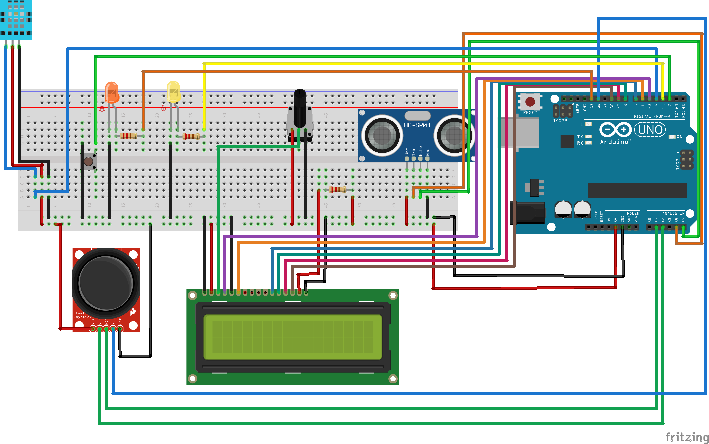
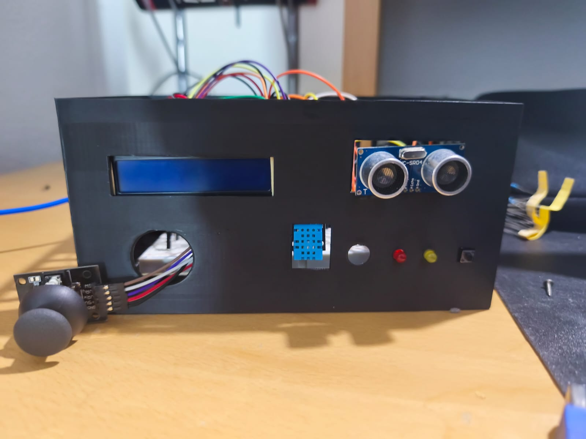
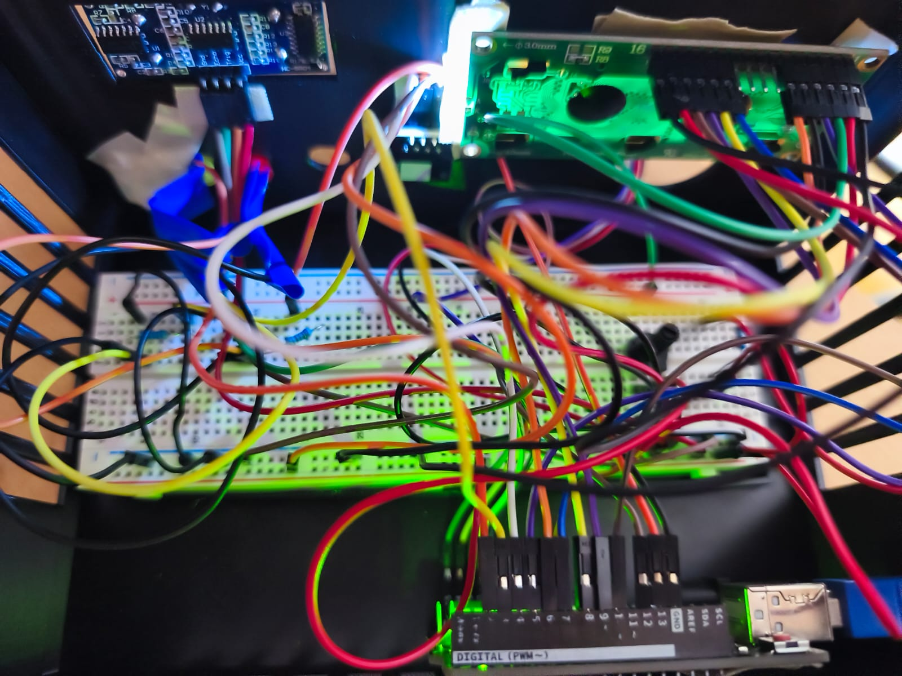
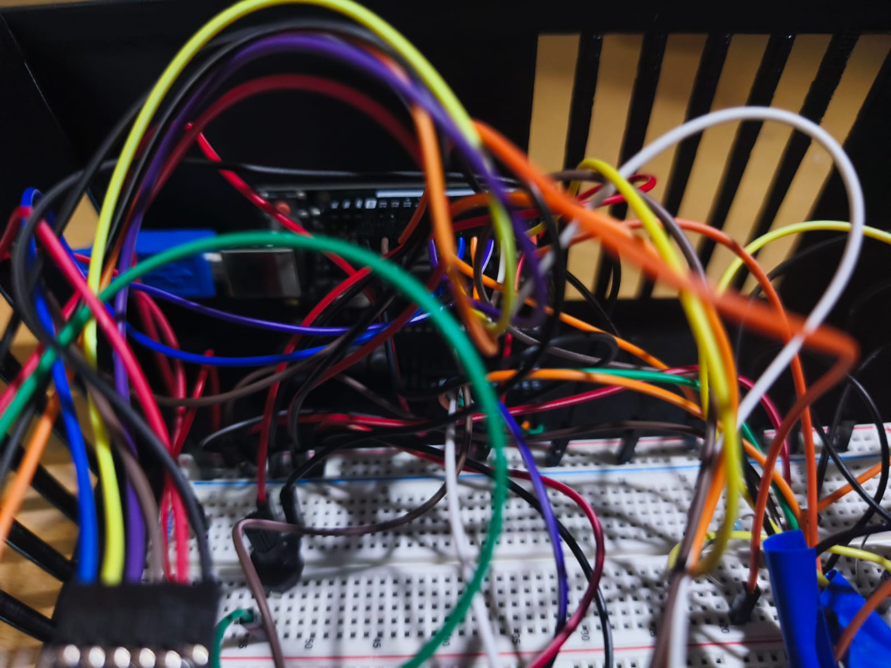
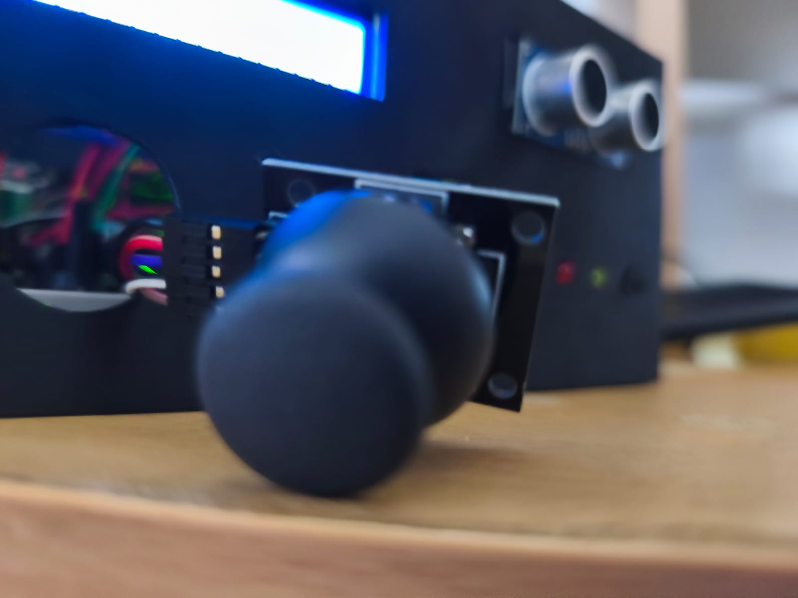

Práctica 3: Controlador de una Máquina Expendedora de café
Proyecto para la asignatura de Sistemas Empotrados y de Tiempo Real. Máquina expendedora de café, pruébala en el simulador.
ESPERANDO CLIENTE
LED1 D11
LED2 0 %
MODO ARRANQUE
Mantén pulsado
Funcionamiento
Tiene tres modos y solo uno está activo cada vez. Cambia de pestaña para ver por qué pantallas pasa.
| Estado | LCD | Cuándo avanza |
|---|---|---|
| Cargando | CARGANDO... | Tras 500 ms de espera, cuando LED1 ha parpadeado 3 veces |
| Estado | LCD | Cuándo avanza |
|---|---|---|
| Espera | ESPERANDO CLIENTE | Cuando detecta a alguien a menos de 1 m |
| Entorno | Temp: / Hum: | A los 5 s |
| Catálogo | 2 productos del menú | Al pulsar el botón del joystick se pide el producto de la primera línea |
| Preparando | Preparando Cafe | Entre 4 y 8 s, mientras LED2 se va encendiendo progresivamente |
| Retirar | RETIRE BEBIDA | A los 3 s vuelve al modo espera |
| Estado | LCD | Qué hace |
|---|---|---|
| Menú | Despliega todas las opciones de admin | Navegación y selección con el joystick |
| Temperatura | Temp: / Hum: | Lee el DHT11 cada 2 s |
| Distancia | Distancia: | Mide cada 100 ms |
| Contador | Segundos: | Tiempo en segundos que lleva encendido el Arduino. |
| Editar Precios | +/-5 SW=OK | Sube o baja (5cts) con el joystick y selecciona con el botón |
Circuito y Montaje
El circuito se ha generado en fritzing.

Montaje real




Qué va a cada pin
| Pin | Componente | Detalle |
|---|---|---|
| D2 | Pulsador externo | INT0, INPUT_PULLUP |
| D3 | LED2 | PWM, 220 Ω |
| D4 | DHT11 | Dato digital |
| D5 a D10 | LCD 1602 | RS, E, DB4 a DB7 |
| D11 | LED1 | PWM, 220 Ω |
| D12 | Joystick | SW |
| A1, A2 | Joystick | Ejes |
| A4, A5 | HC-SR04 | TRIG, ECHO |
| 5V | LCD 1602 | Retroiluminación A, 220 Ω |
Organización del código
p3_control_maquina_expendedora.ino
Configura el hardware, crea los objetos y coordina los modos desde loop().
Modos
- StartupMode.h
- Pantalla de arranque y los tres destellos de LED1
- ServiceMode.h
- Espera de cliente, monitorización, catálogo y preparación
- ServiceMenu.h
- Navegar por el catálogo y elegir producto
- AdminMode.h
- Menú de administración, consultas y edición de precios
Tareas
- JoystickThread.h
- Lee el joystick, filtra su botón y guarda eventos. Como está girado en la carcasa, adapta el mapeo de los ejes
- DhtThread.h
- Temperatura y humedad
- UltrasonicThread.h
- Distancia con una máquina de estados
- LedThread.h
- Cada LED puede parpadear, subir de brillo poco a poco o quedarse fijo
Entradas y datos
- Button.h
- Antirrebote del botón externo y la acción según cuánto se mantuvo pulsado
- ProductCatalog.h
- Nombres y precios que comparten los menús
Cada cuánto pasa cada cosa
Cada sensor es una tarea que se revisa desde loop().
| Tarea | Cuándo | Qué entrega |
|---|---|---|
| Joystick | Más o menos cada 40 ms | Eventos, con el botón ya filtrado |
| DHT11 | Cada 2 s, cuando está habilitada | Temperatura y humedad |
| HC-SR04 | Máquina de estados con micros(), cada 100 ms aprox | La mediana de tres muestras |
Librerías utilizadas
Estas son las librerías que usa el sketch.
| Librería | Cabecera | Para qué |
|---|---|---|
| LiquidCrystal | LiquidCrystal.h | Controlar la pantalla LCD |
| ArduinoThread | Thread.h, ThreadController.h | Organización de tareas |
| DHT sensor library | DHT.h | Gestión del sensor de temperatura y la humedad DHT11 |
| Adafruit Unified Sensor | Dependencia de la librería DHT | |
| AVR Watchdog | avr/wdt.h | Configurar el watchdog de la placa |
El HC-SR04 no usa librería externa: En UltrasonicThread.h se controlan sus pines y calcula la distancia con una máquina de estados.
Archivos del proyecto
El código, el esquema y el modelo 3D de la carcasa.
- Repositorio en GitHubCódigo fuente y README
- p3_control_maquina_expendedora.zipEl proyecto completo
- p3_control_maquina_expendedora.inoEl sketch principal
- pinout_maquina_expendedora.fzzEsquema Fritzing
- base.stlBase de la carcasa
- tapa.stlTapa de la carcasa
- carcasa_dos_piezas.FCStdModelo 3D en FreeCAD
Video Demostración
En el vídeo se ve puede ver el funcionamiento básico del proyecto.
Vídeo de demostración
Para poder observar mejor, el modo espera, se ha modificado el threshold de 1 m a 10 cm. El código original sale del modo espera cuando el ultrasonidos detecta presencia a menos de 1 m.